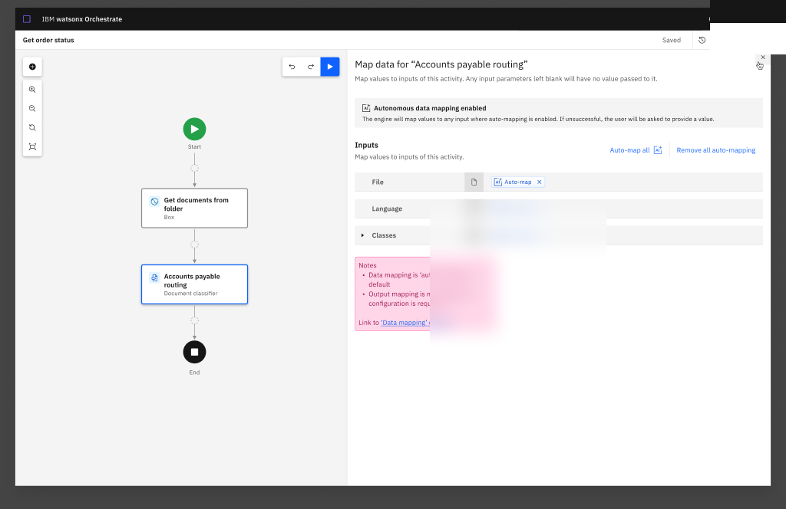

Document Processing / Watson Orchestrate
Make the trust loop visible.
Document automation does not stop at extracting a value. Builders need to know what the system recognized, where it is uncertain, how a person can correct it, and whether a change improved the result. I worked across Watson Orchestrate's Document Processing experience to help connect those moments into one platform workflow.
View Document Processing inside the broader IBM watsonX Orchestrate story
The work started with the platform, not the dashboard.
A document first had to be identified, matched to a schema, read for fields and tables, reviewed where confidence was low, and evaluated against a known reference.
I joined the work in 2025 and ramped up alongside the existing designer, Cate. Together, we made up the design team. I helped translate earlier product concepts into the newer agent model, delivered specifications and interaction designs for Document Classifier and Extractor, and contributed shared patterns across the canvas and component library.
I also worked with adjacent Chat, Carbon, and Tools teams where document review crossed product boundaries. The role was collaborative: connecting states and patterns rather than claiming the platform as a solo design.
Classify
Choose document classes, then connect the classifier to the workflow data it needs.


Extract
Define the fields to extract and keep document-level failures visible inside the setup flow.


Review
Keep source, extracted structure, correction controls, and verification status in one workspace.


Evaluate
Move from an overall signal to the fields and document regions that need attention.


Current Figma source. Fictional prototype data shown; not reported outcomes.
Uncertainty needed somewhere to go.
A confidence score can flag risk, but it cannot resolve an incorrect document type, a missed field, or a misread table by itself. The workflow needed a path from automated output to human judgment and back into the next design decision.
Identify the document type and prepare the right schema.
Read fields and table structures into usable data.
Put low-confidence output beside the source for judgment.
Compare output with a known reference and locate errors.
Use the evidence to revise the schema or working set.
classify → extract → review → evaluate → improve
Four decisions made the parts feel like one product.
Different document types, schemas, tables, review states, and quality signals needed a consistent structure without flattening their specialized work.
Keep source and output together
Review works when a person can compare the document and extracted value without reconstructing context.
Make uncertainty actionable
Confidence and quality concepts needed to point toward the field, document, or configuration requiring attention.
Reuse the workflow language
Shared states and Carbon-aligned patterns kept specialized document work connected to the surrounding canvas.
Separate goals from evidence
Thresholds, table support, history, and assignment rules are described as design or technical scope, not demonstrated results.
My role grew as the work moved from setup to trust.
I joined a platform already in motion. My contribution expanded from translating and specifying Classifier and Extractor work to connecting review patterns and leading the Accuracy Evaluation direction.
Classifier and Extractor
I helped convert earlier concepts into the agent model and delivered interface specifications, interaction detail, Carbon alignment, and reusable patterns.
Human review
I supported requirements and patterns where document context, low-confidence output, and a person's correction needed to stay together.
Accuracy Evaluation
I led the design direction for the evaluation workflow, connecting test-set preparation, ground truth, review, and quality inspection.
Cross-team continuity
I worked across adjacent product and system teams, and later carried additional Document Processing epics while design coverage was reduced.
Trust comes from a workflow people can inspect.
The combined Document Extractor and Evaluation experience released in July 2026. The release connected extraction with the quality-review direction described here.
Confidence alone is not enough. A person needs to see uncertainty in context, correct it without leaving the task, and understand whether the next version is better.
Protected private candidate · source-backed copy · local sanitized assets · no public implementation authorized